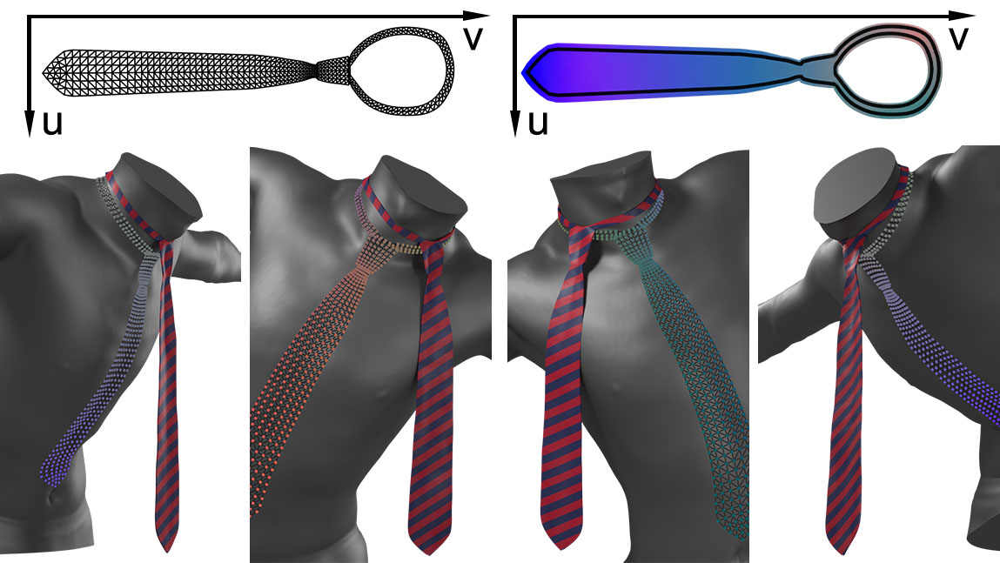
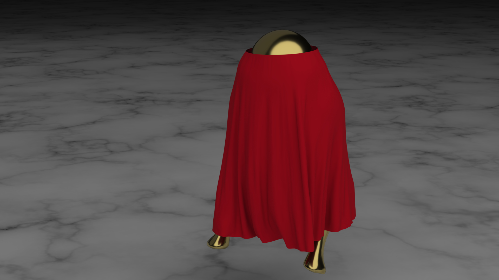

ZHENGLIN GENG
CV | Google Scholar | LinkedIn
Research interests: computer vision, computer graphics, virtual human
EDUCATION
Stanford University, Computer Science, PhD
(Sep 2016 - Jan 2021) Advisor: Ron Fedkiw, GPA: 4.066
Thesis: Coearcing Machine Learning to Output Physically Accurate Results
Tsinghua University, School of Software, B.Eng
(Aug 2012 - July 2016) GPA: 93/100
PUBLICATIONS
- Geng, Z., Johnson, D. and Fedkiw, R., "Coercing Machine Learning to Output Physically Accurate Results", J.Comp.Phys. 406, 109099 (2020).
- Geng, Z., Cao, C., and Tulyakov, S, "3D Guided Fine-Grained Face Manipulation", The IEEE Conference on Computer Vision and Pattern Recognition (CVPR) (2019)

- Geng, Z., Cao, C. and Tulyakov, S., "Towards Photo-Realistic Facial Expression Manipulation", International Journal of Computer Vision, 128(10), 2744-2761. (2020)
-
Wu, J., Geng, Z., Zhou, H., and Fedkiw, R., "Skinning a Parameterization of Three-Dimensional Space for Neural Network Cloth", arXiv:2006.04874 (2020).
- Wu, J., Jin, Y., Geng, Z., Zhou, H., and Fedkiw, R., "Recovering Geometric Information with Learned Texture Perturbations", ACM SIGGRAPH/Eurographics Symposium on Computer Animation (SCA) (2021).
- JJin, N., Zhu, Y., Geng, Z., and Fedkiw, R., "A Pixel-Based Framework for Data-Driven Clothing", ACM SIGGRAPH/Eurographics Symposium on Computer Animation (SCA) (2020).
 - Jin, N., Lu, W., Geng, Z., and Fedkiw, R., "Inequality Cloth", ACM SIGGRAPH/Eurographics Symposium on Computer Animation (SCA), edited by Stephen N. Spencer, Article No. 16 (2017)

WORK EXPERIENCE
Epic Games, Larkspur, Simulation Engineer
Jan 2021 - present
Epic Games, Larkspur, Physics Intern
Sep 2020 - Jan 2021
Facebook Reality Lab, Sausalito, Research Intern
June 2020 - Sep 2020
Epic Games, Larkspur, Physics Intern
Dec 2018 - Sep 2019
Snapchat Research, Santa Monica, Research Intern
June 2018 - Sep 2018
Intuitive Surgical, Sunnyvale, Simulation Engineering Intern
June 2017 - Sep 2017
Hongyu Technology, Beijing, Engineering Intern
June 2016 - Sep 2016
Microsoft Research Asia, Beijing, Student Person Consulting
Sep 2015 - Dec 2015
TEACHING
- Course assistant, CS148 Introduction to Computer Graphics and Imaging, Fall 2020-2021
- Course assistant, CS229 Machine Learning, Summer 2018-2019
- Course assistant, CS248 Interactive Computer Graphics, Winter 2017-2018
- Course assistant, CS148 Introduction to Computer Graphics and Imaging, Fall 2017-2018